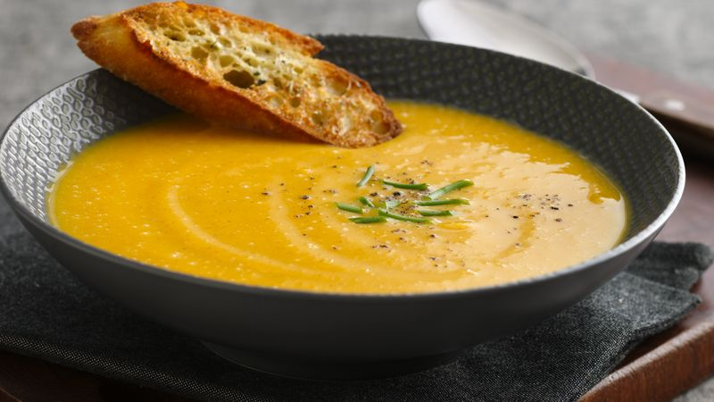

Butternut squash soup

Ingredients:
- Onions
- Butternut squash
- Carrots
- Potatoes
- Vegetable stock
- Bay leaf
- Paprika
- Nugmeg
Instructions:
- Peel and dice the onions, squash, carrots and potatoes. In a large pot, sautee the onions until soft. Add the squash and carrot and sautee a few more minutes.
- Add the potatoes, stock and bay leaf. Boil the soup for 30 minutes, or until the vegetables are very soft.
- Mix the soup with a (stick) blender. Add the paprika, nutmeg, and season to taste.
All recipes